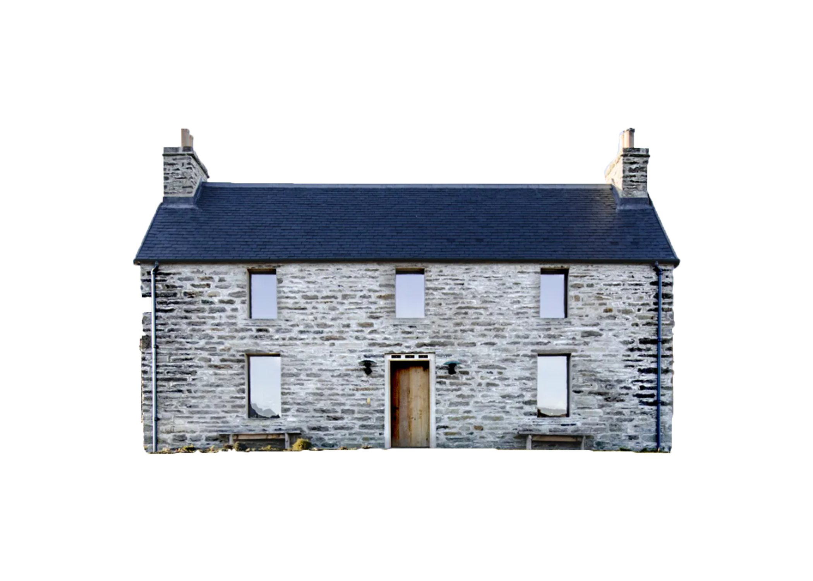

17 APRILE - GIORNO 2
RITIRO PULMINO A NOLEGGIO IN WAVERLEY STATION (EDIMBURGO) ALLE ORE 9;
PARTENZA DIREZIONE ABERDEEN;
SOSTE DURANTE IL PERCORSO IN MATTINATA:
BLACKNESS CASTLE
,
ST. ANDREWS
;
PRANZO AL SACCO;
SOSTE NEL POMERIGGIO PRIMA DI ARRIVARE AD ABERDEEN:
BRAEMAR CASTLE
,
BALMORAL CASTLE
,
DUNNOTTAR CASTLE
;
ARRIVO AD ABERDEEN NEL TARDO POMERIGGIO, VISITA PER LA CITTA', CENA E PERNOTTAMENTO;
TEMPO DI PERCORRENZA: 5 ORE E 30 MINUTI (
MAPPA
);
PERNOTTAMENTO PRESSO LA STRUTTURA
SIBERIA BAR & HOTEL
;
COSTI CAMERE: CRIVARO'S € 81 (
MATRIMONIALE SUPERIOR
), CALCHINI'S € 81 (
MATRIMONIALE SUPERIOR
) - TOT € 162.